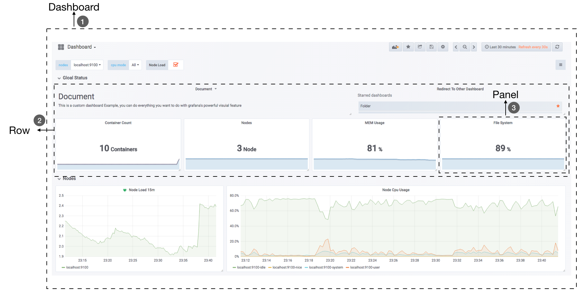

<!DOCTYPE HTML>
<html lang="" >
    <head>
        <meta charset="UTF-8">
        <meta content="text/html; charset=utf-8" http-equiv="Content-Type">
        <title>Grafana的基本概念 · GitBook</title>
        <meta http-equiv="X-UA-Compatible" content="IE=edge" />
        <meta name="description" content="">
        <meta name="generator" content="GitBook 3.2.3">
        
        
        
    
    <link rel="stylesheet" href="../gitbook/style.css">

    
            
                
                <link rel="stylesheet" href="../gitbook/gitbook-plugin-highlight/website.css">
                
            
                
                <link rel="stylesheet" href="../gitbook/gitbook-plugin-search/search.css">
                
            
                
                <link rel="stylesheet" href="../gitbook/gitbook-plugin-fontsettings/website.css">
                
            
        

    

    
        
    
        
    
        
    
        
    
        
    
        
    

        
    
    
    <meta name="HandheldFriendly" content="true"/>
    <meta name="viewport" content="width=device-width, initial-scale=1, user-scalable=no">
    <meta name="apple-mobile-web-app-capable" content="yes">
    <meta name="apple-mobile-web-app-status-bar-style" content="black">
    <link rel="apple-touch-icon-precomposed" sizes="152x152" href="../gitbook/images/apple-touch-icon-precomposed-152.png">
    <link rel="shortcut icon" href="../gitbook/images/favicon.ico" type="image/x-icon">

    
    <link rel="next" href="grafana-panels.html" />
    
    
    <link rel="prev" href="use-console-template.html" />
    

    </head>
    <body>
        
<div class="book">
    <div class="book-summary">
        
            
<div id="book-search-input" role="search">
    <input type="text" placeholder="Type to search" />
</div>

            
                <nav role="navigation">
                


<ul class="summary">
    
    

    

    
        
        
    
        <li class="chapter " data-level="1.1" data-path="../">
            
                <a href="../">
            
                    
                    Introduction
            
                </a>
            

            
        </li>
    
        <li class="chapter " data-level="1.2" data-path="../Introduction.html">
            
                <a href="../Introduction.html">
            
                    
                    简介
            
                </a>
            

            
        </li>
    

    
        
        <li class="header">Part I - Prometheus基础</li>
        
        
    
        <li class="chapter " data-level="2.1" data-path="../quickstart/">
            
                <a href="../quickstart/">
            
                    
                    第1章 介绍
            
                </a>
            

            
            <ul class="articles">
                
    
        <li class="chapter " data-level="2.1.1" data-path="../quickstart/why-monitor.html">
            
                <a href="../quickstart/why-monitor.html">
            
                    
                    Prometheus简介
            
                </a>
            

            
        </li>
    
        <li class="chapter " data-level="2.1.2" data-path="../quickstart/prometheus-quick-start.html">
            
                <a href="../quickstart/prometheus-quick-start.html">
            
                    
                    初识Prometheus
            
                </a>
            

            
            <ul class="articles">
                
    
        <li class="chapter " data-level="2.1.2.1" data-path="../quickstart/install-prometheus-server.html">
            
                <a href="../quickstart/install-prometheus-server.html">
            
                    
                    安装Prometheus Server
            
                </a>
            

            
        </li>
    
        <li class="chapter " data-level="2.1.2.2" data-path="../quickstart/use-node-exporter.html">
            
                <a href="../quickstart/use-node-exporter.html">
            
                    
                    使用Node Exporter采集主机数据
            
                </a>
            

            
        </li>
    
        <li class="chapter " data-level="2.1.2.3" data-path="../quickstart/promql_quickstart.html">
            
                <a href="../quickstart/promql_quickstart.html">
            
                    
                    使用PromQL查询监控数据
            
                </a>
            

            
        </li>
    
        <li class="chapter " data-level="2.1.2.4" data-path="../quickstart/use-grafana-create-dashboard.html">
            
                <a href="../quickstart/use-grafana-create-dashboard.html">
            
                    
                    监控数据可视化
            
                </a>
            

            
        </li>
    

            </ul>
            
        </li>
    
        <li class="chapter " data-level="2.1.3" data-path="../quickstart/prometheus-job-and-instance.html">
            
                <a href="../quickstart/prometheus-job-and-instance.html">
            
                    
                    任务和实例
            
                </a>
            

            
        </li>
    
        <li class="chapter " data-level="2.1.4" data-path="../quickstart/prometheus-arch.html">
            
                <a href="../quickstart/prometheus-arch.html">
            
                    
                    Prometheus核心组件
            
                </a>
            

            
        </li>
    
        <li class="chapter " data-level="2.1.5" data-path="../quickstart/SUMMARY.html">
            
                <a href="../quickstart/SUMMARY.html">
            
                    
                    小结
            
                </a>
            

            
        </li>
    

            </ul>
            
        </li>
    
        <li class="chapter " data-level="2.2" data-path="../promql/">
            
                <a href="../promql/">
            
                    
                    第2章 探索PromQL
            
                </a>
            

            
            <ul class="articles">
                
    
        <li class="chapter " data-level="2.2.1" data-path="../promql/what-is-prometheus-metrics-and-labels.html">
            
                <a href="../promql/what-is-prometheus-metrics-and-labels.html">
            
                    
                    理解时间序列
            
                </a>
            

            
        </li>
    
        <li class="chapter " data-level="2.2.2" data-path="../promql/prometheus-metrics-types.html">
            
                <a href="../promql/prometheus-metrics-types.html">
            
                    
                    Metrics类型
            
                </a>
            

            
        </li>
    
        <li class="chapter " data-level="2.2.3" data-path="../promql/prometheus-query-language.html">
            
                <a href="../promql/prometheus-query-language.html">
            
                    
                    初识PromQL
            
                </a>
            

            
        </li>
    
        <li class="chapter " data-level="2.2.4" data-path="../promql/prometheus-promql-operators-v2.html">
            
                <a href="../promql/prometheus-promql-operators-v2.html">
            
                    
                    PromQL操作符
            
                </a>
            

            
        </li>
    
        <li class="chapter " data-level="2.2.5" data-path="../promql/prometheus-aggr-ops.html">
            
                <a href="../promql/prometheus-aggr-ops.html">
            
                    
                    PromQL聚合操作
            
                </a>
            

            
        </li>
    
        <li class="chapter " data-level="2.2.6" data-path="../promql/prometheus-promql-functions.html">
            
                <a href="../promql/prometheus-promql-functions.html">
            
                    
                    PromQL内置函数
            
                </a>
            

            
        </li>
    
        <li class="chapter " data-level="2.2.7" data-path="../promql/prometheus-promql-with-http-api.html">
            
                <a href="../promql/prometheus-promql-with-http-api.html">
            
                    
                    在HTTP API中使用PromQL
            
                </a>
            

            
        </li>
    
        <li class="chapter " data-level="2.2.8" data-path="../promql/prometheus-promql-best-praticase.html">
            
                <a href="../promql/prometheus-promql-best-praticase.html">
            
                    
                    最佳实践：4个黄金指标和USE方法
            
                </a>
            

            
        </li>
    
        <li class="chapter " data-level="2.2.9" data-path="../promql/SUMMARY.html">
            
                <a href="../promql/SUMMARY.html">
            
                    
                    小结
            
                </a>
            

            
        </li>
    

            </ul>
            
        </li>
    
        <li class="chapter " data-level="2.3" data-path="../alert/">
            
                <a href="../alert/">
            
                    
                    第3章 Prometheus告警处理
            
                </a>
            

            
            <ul class="articles">
                
    
        <li class="chapter " data-level="2.3.1" data-path="../alert/prometheus-alert-manager-overview.html">
            
                <a href="../alert/prometheus-alert-manager-overview.html">
            
                    
                    Prometheus告警简介
            
                </a>
            

            
        </li>
    
        <li class="chapter " data-level="2.3.2" data-path="../alert/prometheus-alert-rule.html">
            
                <a href="../alert/prometheus-alert-rule.html">
            
                    
                    自定义Prometheus告警规则
            
                </a>
            

            
        </li>
    
        <li class="chapter " data-level="2.3.3" data-path="../alert/install-alert-manager.html">
            
                <a href="../alert/install-alert-manager.html">
            
                    
                    部署AlertManager
            
                </a>
            

            
        </li>
    
        <li class="chapter " data-level="2.3.4" data-path="../alert/alert-manager-config.html">
            
                <a href="../alert/alert-manager-config.html">
            
                    
                    Alertmanager配置概述
            
                </a>
            

            
        </li>
    
        <li class="chapter " data-level="2.3.5" data-path="../alert/alert-manager-route.html">
            
                <a href="../alert/alert-manager-route.html">
            
                    
                    基于标签的告警处理路由
            
                </a>
            

            
        </li>
    
        <li class="chapter " data-level="2.3.6" data-path="../alert/alert-manager-use-receiver.html">
            
                <a href="../alert/alert-manager-use-receiver.html">
            
                    
                    使用Receiver接收告警信息
            
                </a>
            

            
            <ul class="articles">
                
    
        <li class="chapter " data-level="2.3.6.1" data-path="../alert/alert-with-smtp.html">
            
                <a href="../alert/alert-with-smtp.html">
            
                    
                    集成邮件系统
            
                </a>
            

            
        </li>
    
        <li class="chapter " data-level="2.3.6.2" data-path="../alert/alert-with-slack.html">
            
                <a href="../alert/alert-with-slack.html">
            
                    
                    集成Slack
            
                </a>
            

            
        </li>
    
        <li class="chapter " data-level="2.3.6.3" data-path="../alert/alert-with-wechat.html">
            
                <a href="../alert/alert-with-wechat.html">
            
                    
                    集成企业微信
            
                </a>
            

            
        </li>
    
        <li class="chapter " data-level="2.3.6.4" data-path="../alert/alert-manager-extension-with-webhook.html">
            
                <a href="../alert/alert-manager-extension-with-webhook.html">
            
                    
                    集成钉钉：基于Webhook的扩展
            
                </a>
            

            
        </li>
    

            </ul>
            
        </li>
    
        <li class="chapter " data-level="2.3.7" data-path="../alert/alert-template.html">
            
                <a href="../alert/alert-template.html">
            
                    
                    告警模板详解
            
                </a>
            

            
        </li>
    
        <li class="chapter " data-level="2.3.8" data-path="../alert/alert-manager-inhibit.html">
            
                <a href="../alert/alert-manager-inhibit.html">
            
                    
                    屏蔽告警通知
            
                </a>
            

            
        </li>
    
        <li class="chapter " data-level="2.3.9" data-path="../alert/prometheus-recoding-rules.html">
            
                <a href="../alert/prometheus-recoding-rules.html">
            
                    
                    使用Recoding Rules优化性能
            
                </a>
            

            
        </li>
    
        <li class="chapter " data-level="2.3.10" data-path="../alert/SUMMARY.html">
            
                <a href="../alert/SUMMARY.html">
            
                    
                    小结
            
                </a>
            

            
        </li>
    

            </ul>
            
        </li>
    

    
        
        <li class="header">Part II - Prometheus进阶</li>
        
        
    
        <li class="chapter " data-level="3.1" data-path="../exporter/">
            
                <a href="../exporter/">
            
                    
                    第4章 Exporter详解
            
                </a>
            

            
            <ul class="articles">
                
    
        <li class="chapter " data-level="3.1.1" data-path="../exporter/what-is-prometheus-exporter.html">
            
                <a href="../exporter/what-is-prometheus-exporter.html">
            
                    
                    Exporter是什么
            
                </a>
            

            
        </li>
    
        <li class="chapter " data-level="3.1.2" data-path="../exporter/commonly-eporter-usage.html">
            
                <a href="../exporter/commonly-eporter-usage.html">
            
                    
                    常用Exporter
            
                </a>
            

            
            <ul class="articles">
                
    
        <li class="chapter " data-level="3.1.2.1" data-path="../exporter/use-prometheus-monitor-container.html">
            
                <a href="../exporter/use-prometheus-monitor-container.html">
            
                    
                    容器监控：cAdvisor
            
                </a>
            

            
        </li>
    
        <li class="chapter " data-level="3.1.2.2" data-path="../exporter/use-promethues-monitor-mysql.html">
            
                <a href="../exporter/use-promethues-monitor-mysql.html">
            
                    
                    监控MySQL运行状态：MySQLD Exporter
            
                </a>
            

            
        </li>
    
        <li class="chapter " data-level="3.1.2.3" data-path="../exporter/install_blackbox_exporter.html">
            
                <a href="../exporter/install_blackbox_exporter.html">
            
                    
                    网络探测：Blackbox Exporter
            
                </a>
            

            
        </li>
    

            </ul>
            
        </li>
    
        <li class="chapter " data-level="3.1.3" data-path="../exporter/custom_exporter_with_java.html">
            
                <a href="../exporter/custom_exporter_with_java.html">
            
                    
                    使用Java自定义Exporter
            
                </a>
            

            
            <ul class="articles">
                
    
        <li class="chapter " data-level="3.1.3.1" data-path="../exporter/client_library_java.html">
            
                <a href="../exporter/client_library_java.html">
            
                    
                    使用Client Java构建Exporter程序
            
                </a>
            

            
        </li>
    
        <li class="chapter " data-level="3.1.3.2" data-path="../exporter/custom_app_support_prometheus.html">
            
                <a href="../exporter/custom_app_support_prometheus.html">
            
                    
                    在应用中内置Prometheus支持
            
                </a>
            

            
        </li>
    

            </ul>
            
        </li>
    
        <li class="chapter " data-level="3.1.4" data-path="../exporter/SUMMARY.html">
            
                <a href="../exporter/SUMMARY.html">
            
                    
                    小结
            
                </a>
            

            
        </li>
    

            </ul>
            
        </li>
    
        <li class="chapter " data-level="3.2" data-path="./">
            
                <a href="./">
            
                    
                    第5章 数据与可视化
            
                </a>
            

            
            <ul class="articles">
                
    
        <li class="chapter " data-level="3.2.1" data-path="use-console-template.html">
            
                <a href="use-console-template.html">
            
                    
                    使用Console Template
            
                </a>
            

            
        </li>
    
        <li class="chapter active" data-level="3.2.2" data-path="grafana-intro.html">
            
                <a href="grafana-intro.html">
            
                    
                    Grafana的基本概念
            
                </a>
            

            
        </li>
    
        <li class="chapter " data-level="3.2.3" data-path="grafana-panels.html">
            
                <a href="grafana-panels.html">
            
                    
                    Grafana与数据可视化
            
                </a>
            

            
            <ul class="articles">
                
    
        <li class="chapter " data-level="3.2.3.1" data-path="use_graph_panel.html">
            
                <a href="use_graph_panel.html">
            
                    
                    变化趋势：Graph面板
            
                </a>
            

            
        </li>
    
        <li class="chapter " data-level="3.2.3.2" data-path="use_heatmap_panel.html">
            
                <a href="use_heatmap_panel.html">
            
                    
                    分布统计：Heatmap面板
            
                </a>
            

            
        </li>
    
        <li class="chapter " data-level="3.2.3.3" data-path="use_singlestat_panel.html">
            
                <a href="use_singlestat_panel.html">
            
                    
                    当前状态：SingleStat面板
            
                </a>
            

            
        </li>
    

            </ul>
            
        </li>
    
        <li class="chapter " data-level="3.2.4" data-path="templating.html">
            
                <a href="templating.html">
            
                    
                    模板化Dashboard
            
                </a>
            

            
        </li>
    
        <li class="chapter " data-level="3.2.5" data-path="SUMMARY.html">
            
                <a href="SUMMARY.html">
            
                    
                    小结
            
                </a>
            

            
        </li>
    

            </ul>
            
        </li>
    
        <li class="chapter " data-level="3.3" data-path="../ha/READMD.html">
            
                <a href="../ha/READMD.html">
            
                    
                    第6章 集群与高可用
            
                </a>
            

            
            <ul class="articles">
                
    
        <li class="chapter " data-level="3.3.1" data-path="../ha/prometheus-local-storage.html">
            
                <a href="../ha/prometheus-local-storage.html">
            
                    
                    本地存储
            
                </a>
            

            
        </li>
    
        <li class="chapter " data-level="3.3.2" data-path="../ha/prometheus-remote-storage.html">
            
                <a href="../ha/prometheus-remote-storage.html">
            
                    
                    远程存储
            
                </a>
            

            
        </li>
    
        <li class="chapter " data-level="3.3.3" data-path="../ha/scale-prometheus-with-federation.html">
            
                <a href="../ha/scale-prometheus-with-federation.html">
            
                    
                    联邦集群
            
                </a>
            

            
        </li>
    
        <li class="chapter " data-level="3.3.4" data-path="../ha/prometheus-and-high-availability.html">
            
                <a href="../ha/prometheus-and-high-availability.html">
            
                    
                    Prometheus高可用
            
                </a>
            

            
        </li>
    
        <li class="chapter " data-level="3.3.5" data-path="../ha/alertmanager-high-availability.html">
            
                <a href="../ha/alertmanager-high-availability.html">
            
                    
                    Alertmanager高可用
            
                </a>
            

            
        </li>
    
        <li class="chapter " data-level="3.3.6" data-path="../ha/SUMMARY.html">
            
                <a href="../ha/SUMMARY.html">
            
                    
                    小结
            
                </a>
            

            
        </li>
    

            </ul>
            
        </li>
    
        <li class="chapter " data-level="3.4" data-path="../sd/">
            
                <a href="../sd/">
            
                    
                    第7章 Prometheus服务发现
            
                </a>
            

            
            <ul class="articles">
                
    
        <li class="chapter " data-level="3.4.1" data-path="../sd/why-need-service-discovery.html">
            
                <a href="../sd/why-need-service-discovery.html">
            
                    
                    Prometheus与服务发现
            
                </a>
            

            
        </li>
    
        <li class="chapter " data-level="3.4.2" data-path="../sd/service-discovery-with-file.html">
            
                <a href="../sd/service-discovery-with-file.html">
            
                    
                    基于文件的服务发现
            
                </a>
            

            
        </li>
    
        <li class="chapter " data-level="3.4.3" data-path="../sd/service-discovery-with-consul.html">
            
                <a href="../sd/service-discovery-with-consul.html">
            
                    
                    基于Consul的服务发现
            
                </a>
            

            
        </li>
    
        <li class="chapter " data-level="3.4.4" data-path="../sd/service-discovery-with-relabel.html">
            
                <a href="../sd/service-discovery-with-relabel.html">
            
                    
                    服务发现与Relabel
            
                </a>
            

            
        </li>
    
        <li class="chapter " data-level="3.4.5" data-path="../sd/SUMMARY.html">
            
                <a href="../sd/SUMMARY.html">
            
                    
                    小结
            
                </a>
            

            
        </li>
    

            </ul>
            
        </li>
    

    
        
        <li class="header">Part III - Prometheus实战</li>
        
        
    
        <li class="chapter " data-level="4.1" data-path="../kubernetes/READMD.html">
            
                <a href="../kubernetes/READMD.html">
            
                    
                    第8章 监控Kubernetes
            
                </a>
            

            
            <ul class="articles">
                
    
        <li class="chapter " data-level="4.1.1" data-path="../kubernetes/kubernetes-with-minikube.html">
            
                <a href="../kubernetes/kubernetes-with-minikube.html">
            
                    
                    初识Kubernetes
            
                </a>
            

            
        </li>
    
        <li class="chapter " data-level="4.1.2" data-path="../kubernetes/deploy-prometheus-in-kubernetes.html">
            
                <a href="../kubernetes/deploy-prometheus-in-kubernetes.html">
            
                    
                    部署Prometheus
            
                </a>
            

            
        </li>
    
        <li class="chapter " data-level="4.1.3" data-path="../kubernetes/service-discovery-with-kubernetes.html">
            
                <a href="../kubernetes/service-discovery-with-kubernetes.html">
            
                    
                    Kubernetes下的服务发现
            
                </a>
            

            
        </li>
    
        <li class="chapter " data-level="4.1.4" data-path="../kubernetes/use-prometheus-monitor-kubernetes.html">
            
                <a href="../kubernetes/use-prometheus-monitor-kubernetes.html">
            
                    
                    监控Kubernetes集群
            
                </a>
            

            
        </li>
    
        <li class="chapter " data-level="4.1.5" data-path="../kubernetes/hap-with-prometheus.html">
            
                <a href="../kubernetes/hap-with-prometheus.html">
            
                    
                    基于Prometheus的弹性伸缩
            
                </a>
            

            
        </li>
    
        <li class="chapter " data-level="4.1.6" data-path="../kubernetes/SUMMARY.html">
            
                <a href="../kubernetes/SUMMARY.html">
            
                    
                    小结
            
                </a>
            

            
        </li>
    

            </ul>
            
        </li>
    
        <li class="chapter " data-level="4.2" data-path="../operator/">
            
                <a href="../operator/">
            
                    
                    第9章 Prometheus Operator
            
                </a>
            

            
            <ul class="articles">
                
    
        <li class="chapter " data-level="4.2.1" data-path="../operator/what-is-prometheus-operator.html">
            
                <a href="../operator/what-is-prometheus-operator.html">
            
                    
                    什么是Prometheus Operator
            
                </a>
            

            
        </li>
    
        <li class="chapter " data-level="4.2.2" data-path="../operator/use-operator-manage-prometheus.html">
            
                <a href="../operator/use-operator-manage-prometheus.html">
            
                    
                    使用Operator管理Prometheus
            
                </a>
            

            
        </li>
    
        <li class="chapter " data-level="4.2.3" data-path="../operator/use-operator-manage-monitor.html">
            
                <a href="../operator/use-operator-manage-monitor.html">
            
                    
                    使用Operator管理监控配置
            
                </a>
            

            
        </li>
    
        <li class="chapter " data-level="4.2.4" data-path="../operator/use-custom-configuration-in-operator.html">
            
                <a href="../operator/use-custom-configuration-in-operator.html">
            
                    
                    在Prometheus Operator中使用自定义配置
            
                </a>
            

            
        </li>
    
        <li class="chapter " data-level="4.2.5" data-path="../operator/SUMMARY.html">
            
                <a href="../operator/SUMMARY.html">
            
                    
                    小结
            
                </a>
            

            
        </li>
    

            </ul>
            
        </li>
    
        <li class="chapter " data-level="4.3" data-path="../REFERENCES.html">
            
                <a href="../REFERENCES.html">
            
                    
                    参考资料
            
                </a>
            

            
        </li>
    

    

    <li class="divider"></li>

    <li>
        <a href="https://www.gitbook.com" target="blank" class="gitbook-link">
            Published with GitBook
        </a>
    </li>
</ul>


                </nav>
            
        
    </div>

    <div class="book-body">
        
            <div class="body-inner">
                
                    

<div class="book-header" role="navigation">
    

    <!-- Title -->
    <h1>
        <i class="fa fa-circle-o-notch fa-spin"></i>
        <a href=".." >Grafana的基本概念</a>
    </h1>
</div>


                    <div class="page-wrapper" tabindex="-1" role="main">
                        <div class="page-inner">
                            
<div id="book-search-results">
    <div class="search-noresults">
    
                                <section class="normal markdown-section">
                                
                                <h1 id="grafana&#x7B80;&#x4ECB;">Grafana&#x7B80;&#x4ECB;</h1>
<p>Console Teamplet&#x867D;&#x7136;&#x80FD;&#x6EE1;&#x8DB3;&#x4E00;&#x5B9A;&#x7684;&#x53EF;&#x89C6;&#x5316;&#x9700;&#x6C42;&#xFF0C;&#x4F46;&#x662F;&#x4E5F;&#x4EC5;&#x4EC5;&#x662F;&#x5BF9;Prometheus&#x7684;&#x57FA;&#x672C;&#x80FD;&#x529B;&#x7684;&#x8865;&#x5145;&#x3002;&#x540C;&#x65F6;&#x4F7F;&#x7528;&#x4E5F;&#x4F1A;&#x6709;&#x8BB8;&#x591A;&#x95EE;&#x9898;&#xFF0C;&#x9996;&#x5148;&#x7528;&#x6237;&#x9700;&#x8981;&#x5B66;&#x4E60;&#x548C;&#x4E86;&#x89E3;Go Template&#x6A21;&#x677F;&#x8BED;&#x8A00;&#xFF0C;&#x5176;&#x5B83;&#x5176;&#x652F;&#x6301;&#x7684;&#x53EF;&#x89C6;&#x5316;&#x56FE;&#x8868;&#x7C7B;&#x578B;&#x4E5F;&#x975E;&#x5E38;&#x6709;&#x9650;&#xFF0C;&#x6700;&#x540E;&#x5176;&#x7BA1;&#x7406;&#x4E5F;&#x6709;&#x4E00;&#x5B9A;&#x7684;&#x6210;&#x672C;&#x3002;&#x5728;&#x7B2C;1&#x7AE0;&#x7684;&#x201C;&#x521D;&#x8BC6;Prometheus&#x201D;&#x4E2D;&#x6211;&#x4EEC;&#x5DF2;&#x7ECF;&#x5C1D;&#x8BD5;&#x901A;&#x8FC7;Grafana&#x5FEB;&#x901F;&#x642D;&#x5EFA;&#x8FC7;&#x4E00;&#x4E2A;&#x4E3B;&#x673A;&#x76D1;&#x63A7;&#x7684;Dashboard&#xFF0C;&#x5728;&#x672C;&#x7AE0;&#x4E2D;&#x5C06;&#x4F1A;&#x5E26;&#x6765;&#x8BFB;&#x8005;&#x5B66;&#x4E60;&#x5982;&#x4F55;&#x4F7F;&#x7528;Grafana&#x521B;&#x5EFA;&#x66F4;&#x52A0;&#x7CBE;&#x7F8E;&#x7684;&#x53EF;&#x89C6;&#x5316;&#x62A5;&#x8868;&#x3002;</p>
<h2 id="grafana&#x57FA;&#x672C;&#x6982;&#x5FF5;">Grafana&#x57FA;&#x672C;&#x6982;&#x5FF5;</h2>
<p>&#x9996;&#x5148;Grafana&#x662F;&#x4E00;&#x4E2A;&#x901A;&#x7528;&#x7684;&#x53EF;&#x89C6;&#x5316;&#x5DE5;&#x5177;&#x3002;&#x2018;&#x901A;&#x7528;&#x2019;&#x610F;&#x5473;&#x7740;Grafana&#x4E0D;&#x4EC5;&#x4EC5;&#x9002;&#x7528;&#x4E8E;&#x5C55;&#x793A;Prometheus&#x4E0B;&#x7684;&#x76D1;&#x63A7;&#x6570;&#x636E;&#xFF0C;&#x4E5F;&#x540C;&#x6837;&#x9002;&#x7528;&#x4E8E;&#x4E00;&#x4E9B;&#x5176;&#x4ED6;&#x7684;&#x6570;&#x636E;&#x53EF;&#x89C6;&#x5316;&#x9700;&#x6C42;&#x3002;&#x5728;&#x5F00;&#x59CB;&#x4F7F;&#x7528;Grafana&#x4E4B;&#x524D;&#xFF0C;&#x6211;&#x4EEC;&#x9996;&#x5148;&#x9700;&#x8981;&#x660E;&#x786E;&#x4E00;&#x4E9B;Grafana&#x4E0B;&#x7684;&#x57FA;&#x672C;&#x6982;&#x5FF5;&#xFF0C;&#x4EE5;&#x5E2E;&#x52A9;&#x7528;&#x6237;&#x80FD;&#x591F;&#x5FEB;&#x901F;&#x7406;&#x89E3;Grafana&#x3002;</p>
<h3 id="&#x6570;&#x636E;&#x6E90;&#xFF08;data-source&#xFF09;">&#x6570;&#x636E;&#x6E90;&#xFF08;Data Source&#xFF09;</h3>
<p>&#x5BF9;&#x4E8E;Grafana&#x800C;&#x8A00;&#xFF0C;Prometheus&#x8FD9;&#x7C7B;&#x4E3A;&#x5176;&#x63D0;&#x4F9B;&#x6570;&#x636E;&#x7684;&#x5BF9;&#x8C61;&#x5747;&#x79F0;&#x4E3A;&#x6570;&#x636E;&#x6E90;&#xFF08;Data Source&#xFF09;&#x3002;&#x76EE;&#x524D;&#xFF0C;Grafana&#x5B98;&#x65B9;&#x63D0;&#x4F9B;&#x4E86;&#x5BF9;&#xFF1A;Graphite, InfluxDB, OpenTSDB, Prometheus, Elasticsearch, CloudWatch&#x7684;&#x652F;&#x6301;&#x3002;&#x5BF9;&#x4E8E;Grafana&#x7BA1;&#x7406;&#x5458;&#x800C;&#x8A00;&#xFF0C;&#x53EA;&#x9700;&#x8981;&#x5C06;&#x8FD9;&#x4E9B;&#x5BF9;&#x8C61;&#x4EE5;&#x6570;&#x636E;&#x6E90;&#x7684;&#x5F62;&#x5F0F;&#x6DFB;&#x52A0;&#x5230;Grafana&#x4E2D;&#xFF0C;Grafana&#x4FBF;&#x53EF;&#x4EE5;&#x8F7B;&#x677E;&#x7684;&#x5B9E;&#x73B0;&#x5BF9;&#x8FD9;&#x4E9B;&#x6570;&#x636E;&#x7684;&#x53EF;&#x89C6;&#x5316;&#x5DE5;&#x4F5C;&#x3002;</p>
<h3 id="&#x4EEA;&#x8868;&#x76D8;&#xFF08;dashboard&#xFF09;">&#x4EEA;&#x8868;&#x76D8;&#xFF08;Dashboard&#xFF09;</h3>
<p>&#x901A;&#x8FC7;&#x6570;&#x636E;&#x6E90;&#x5B9A;&#x4E49;&#x597D;&#x53EF;&#x89C6;&#x5316;&#x7684;&#x6570;&#x636E;&#x6765;&#x6E90;&#x4E4B;&#x540E;&#xFF0C;&#x5BF9;&#x4E8E;&#x7528;&#x6237;&#x800C;&#x8A00;&#x6700;&#x91CD;&#x8981;&#x7684;&#x4E8B;&#x60C5;&#x5C31;&#x662F;&#x5B9E;&#x73B0;&#x6570;&#x636E;&#x7684;&#x53EF;&#x89C6;&#x5316;&#x3002;&#x5728;Grafana&#x4E2D;&#xFF0C;&#x6211;&#x4EEC;&#x901A;&#x8FC7;Dashboard&#x6765;&#x7EC4;&#x7EC7;&#x548C;&#x7BA1;&#x7406;&#x6211;&#x4EEC;&#x7684;&#x6570;&#x636E;&#x53EF;&#x89C6;&#x5316;&#x56FE;&#x8868;&#xFF1A;</p>
<p></p>
<p>&#x5982;&#x4E0A;&#x6240;&#x793A;&#xFF0C;&#x5728;&#x4E00;&#x4E2A;Dashboard&#x4E2D;&#x4E00;&#x4E2A;&#x6700;&#x57FA;&#x672C;&#x7684;&#x53EF;&#x89C6;&#x5316;&#x5355;&#x5143;&#x4E3A;&#x4E00;&#x4E2A;<strong>Panel&#xFF08;&#x9762;&#x677F;&#xFF09;</strong>&#xFF0C;Panel&#x901A;&#x8FC7;&#x5982;&#x8D8B;&#x52BF;&#x56FE;&#xFF0C;&#x70ED;&#x529B;&#x56FE;&#x7684;&#x5F62;&#x5F0F;&#x5C55;&#x793A;&#x53EF;&#x89C6;&#x5316;&#x6570;&#x636E;&#x3002; &#x5E76;&#x4E14;&#x5728;Dashboard&#x4E2D;&#x6BCF;&#x4E00;&#x4E2A;Panel&#x662F;&#x4E00;&#x4E2A;&#x5B8C;&#x5168;&#x72EC;&#x7ACB;&#x7684;&#x90E8;&#x5206;&#xFF0C;&#x901A;&#x8FC7;Panel&#x7684;<strong>Query Editor&#xFF08;&#x67E5;&#x8BE2;&#x7F16;&#x8F91;&#x5668;&#xFF09;</strong>&#x6211;&#x4EEC;&#x53EF;&#x4EE5;&#x4E3A;&#x6BCF;&#x4E00;&#x4E2A;Panel&#x81EA;&#x5DF1;&#x67E5;&#x8BE2;&#x7684;&#x6570;&#x636E;&#x6E90;&#x4EE5;&#x53CA;&#x6570;&#x636E;&#x67E5;&#x8BE2;&#x65B9;&#x5F0F;&#xFF0C;&#x4F8B;&#x5982;&#xFF0C;&#x5982;&#x679C;&#x4EE5;Prometheus&#x4F5C;&#x4E3A;&#x6570;&#x636E;&#x6E90;&#xFF0C;&#x90A3;&#x5728;Query Editor&#x4E2D;&#xFF0C;&#x6211;&#x4EEC;&#x5B9E;&#x9645;&#x4E0A;&#x4F7F;&#x7528;&#x7684;&#x662F;PromQL&#xFF0C;&#x800C;Panel&#x5219;&#x4F1A;&#x8D1F;&#x8D23;&#x4ECE;&#x7279;&#x5B9A;&#x7684;Prometheus&#x4E2D;&#x67E5;&#x8BE2;&#x51FA;&#x76F8;&#x5E94;&#x7684;&#x6570;&#x636E;&#xFF0C;&#x5E76;&#x4E14;&#x5C06;&#x5176;&#x53EF;&#x89C6;&#x5316;&#x3002;&#x7531;&#x4E8E;&#x6BCF;&#x4E2A;Panel&#x662F;&#x5B8C;&#x5168;&#x72EC;&#x7ACB;&#x7684;&#xFF0C;&#x56E0;&#x6B64;&#x5728;&#x4E00;&#x4E2A;Dashboard&#x4E2D;&#xFF0C;&#x5F80;&#x5F80;&#x53EF;&#x80FD;&#x4F1A;&#x5305;&#x542B;&#x6765;&#x81EA;&#x591A;&#x4E2A;Data Source&#x7684;&#x6570;&#x636E;&#x3002;</p>
<p>Grafana&#x901A;&#x8FC7;&#x63D2;&#x4EF6;&#x7684;&#x5F62;&#x5F0F;&#x63D0;&#x4F9B;&#x4E86;&#x591A;&#x79CD;Panel&#x7684;&#x5B9E;&#x73B0;&#xFF0C;&#x5E38;&#x7528;&#x7684;&#x5982;&#xFF1A;Graph Panel&#xFF0C;Heatmap Panel&#xFF0C;SingleStat Panel&#x4EE5;&#x53CA;Table Panel&#x7B49;&#x3002;&#x7528;&#x6237;&#x8FD8;&#x53EF;&#x901A;&#x8FC7;&#x63D2;&#x4EF6;&#x5B89;&#x88C5;&#x66F4;&#x591A;&#x7C7B;&#x578B;&#x7684;Panel&#x9762;&#x677F;&#x3002;</p>
<p>&#x9664;&#x4E86;Panel&#x4EE5;&#x5916;&#xFF0C;&#x5728;Dashboard&#x9875;&#x9762;&#x4E2D;&#xFF0C;&#x6211;&#x4EEC;&#x8FD8;&#x53EF;&#x4EE5;&#x5B9A;&#x4E49;&#x4E00;&#x4E2A;<strong>Row&#xFF08;&#x884C;&#xFF09;</strong>&#xFF0C;&#x6765;&#x7EC4;&#x7EC7;&#x548C;&#x7BA1;&#x7406;&#x4E00;&#x7EC4;&#x76F8;&#x5173;&#x7684;Panel&#x3002;</p>
<p>&#x9664;&#x4E86;Panel, Row&#x8FD9;&#x4E9B;&#x5BF9;&#x8C61;&#x4EE5;&#x5916;&#xFF0C;Grafana&#x8FD8;&#x5141;&#x8BB8;&#x7528;&#x6237;&#x4E3A;Dashboard&#x5B9A;&#x4E49;<strong>Templating variables&#xFF08;&#x6A21;&#x677F;&#x53C2;&#x6570;&#xFF09;</strong>&#xFF0C;&#x4ECE;&#x800C;&#x5B9E;&#x73B0;&#x53EF;&#x4EE5;&#x4E0E;&#x7528;&#x6237;&#x52A8;&#x6001;&#x4EA4;&#x4E92;&#x7684;Dashboard&#x9875;&#x9762;&#x3002;&#x540C;&#x65F6;Grafana&#x901A;&#x8FC7;JSON&#x6570;&#x636E;&#x7ED3;&#x6784;&#x7BA1;&#x7406;&#x4E86;&#x6574;&#x4E2A;Dasboard&#x7684;&#x5B9A;&#x4E49;&#xFF0C;&#x56E0;&#x6B64;&#x8FD9;&#x4E9B;Dashboard&#x4E5F;&#x662F;&#x975E;&#x5E38;&#x65B9;&#x4FBF;&#x8FDB;&#x884C;&#x5171;&#x4EAB;&#x7684;&#x3002;Grafana&#x8FD8;&#x4E13;&#x95E8;&#x4E3A;Dashboard&#x63D0;&#x4F9B;&#x4E86;&#x4E00;&#x4E2A;&#x5171;&#x4EAB;&#x670D;&#x52A1;&#xFF1A;<a href="https://grafana.com/dashboards" target="_blank">https://grafana.com/dashboards</a>&#xFF0C;&#x901A;&#x8FC7;&#x8BE5;&#x670D;&#x52A1;&#x7528;&#x6237;&#x53EF;&#x4EE5;&#x8F7B;&#x677E;&#x5B9E;&#x73B0;Dashboard&#x7684;&#x5171;&#x4EAB;&#xFF0C;&#x540C;&#x65F6;&#x6211;&#x4EEC;&#x4E5F;&#x80FD;&#x5FEB;&#x901F;&#x7684;&#x4ECE;&#x4E2D;&#x627E;&#x5230;&#x6211;&#x4EEC;&#x5E0C;&#x671B;&#x7684;Dashboard&#x5B9E;&#x73B0;&#xFF0C;&#x5E76;&#x5BFC;&#x5165;&#x5230;&#x81EA;&#x5DF1;&#x7684;Grafana&#x4E2D;&#x3002;</p>
<h3 id="&#x7EC4;&#x7EC7;&#x548C;&#x7528;&#x6237;">&#x7EC4;&#x7EC7;&#x548C;&#x7528;&#x6237;</h3>
<p>&#x4F5C;&#x4E3A;&#x4E00;&#x4E2A;&#x901A;&#x7528;&#x53EF;&#x89C6;&#x5316;&#x5DE5;&#x5177;&#xFF0C;Grafana&#x9664;&#x4E86;&#x63D0;&#x4F9B;&#x7075;&#x6D3B;&#x7684;&#x53EF;&#x89C6;&#x5316;&#x5B9A;&#x5236;&#x80FD;&#x529B;&#x4EE5;&#x5916;&#xFF0C;&#x8FD8;&#x63D0;&#x4F9B;&#x4E86;&#x9762;&#x5411;&#x4F01;&#x4E1A;&#x7684;&#x7EC4;&#x7EC7;&#x7EA7;&#x7BA1;&#x7406;&#x80FD;&#x529B;&#x3002;&#x5728;Grafana&#x4E2D;Dashboard&#x662F;&#x5C5E;&#x4E8E;&#x4E00;&#x4E2A;<strong>Organization&#xFF08;&#x7EC4;&#x7EC7;&#xFF09;</strong>&#xFF0C;&#x901A;&#x8FC7;Organization&#xFF0C;&#x53EF;&#x4EE5;&#x5728;&#x66F4;&#x5927;&#x89C4;&#x6A21;&#x4E0A;&#x4F7F;&#x7528;Grafana&#xFF0C;&#x4F8B;&#x5982;&#x5BF9;&#x4E8E;&#x4E00;&#x4E2A;&#x4F01;&#x4E1A;&#x800C;&#x8A00;&#xFF0C;&#x6211;&#x4EEC;&#x53EF;&#x4EE5;&#x521B;&#x5EFA;&#x591A;&#x4E2A;Organization&#xFF0C;&#x5176;&#x4E2D;<strong>User&#xFF08;&#x7528;&#x6237;&#xFF09;</strong>&#x53EF;&#x4EE5;&#x5C5E;&#x4E8E;&#x4E00;&#x4E2A;&#x6216;&#x591A;&#x4E2A;&#x4E0D;&#x540C;&#x7684;Organization&#x3002; &#x5E76;&#x4E14;&#x5728;&#x4E0D;&#x540C;&#x7684;Organization&#x4E0B;&#xFF0C;&#x53EF;&#x4EE5;&#x4E3A;User&#x8D4B;&#x4E88;&#x4E0D;&#x540C;&#x7684;&#x6743;&#x9650;&#x3002; &#x4ECE;&#x800C;&#x53EF;&#x4EE5;&#x6709;&#x6548;&#x7684;&#x6839;&#x636E;&#x4F01;&#x4E1A;&#x7684;&#x7EC4;&#x7EC7;&#x67B6;&#x6784;&#x5B9A;&#x4E49;&#x6574;&#x4E2A;&#x7BA1;&#x7406;&#x6A21;&#x578B;&#x3002;</p>

                                
                                </section>
                            
    </div>
    <div class="search-results">
        <div class="has-results">
            
            <h1 class="search-results-title"><span class='search-results-count'></span> results matching "<span class='search-query'></span>"</h1>
            <ul class="search-results-list"></ul>
            
        </div>
        <div class="no-results">
            
            <h1 class="search-results-title">No results matching "<span class='search-query'></span>"</h1>
            
        </div>
    </div>
</div>

                        </div>
                    </div>
                
            </div>

            
                
                <a href="use-console-template.html" class="navigation navigation-prev " aria-label="Previous page: 使用Console Template">
                    <i class="fa fa-angle-left"></i>
                </a>
                
                
                <a href="grafana-panels.html" class="navigation navigation-next " aria-label="Next page: Grafana与数据可视化">
                    <i class="fa fa-angle-right"></i>
                </a>
                
            
        
    </div>

    <script>
        var gitbook = gitbook || [];
        gitbook.push(function() {
            gitbook.page.hasChanged({"page":{"title":"Grafana的基本概念","level":"3.2.2","depth":2,"next":{"title":"Grafana与数据可视化","level":"3.2.3","depth":2,"path":"grafana/grafana-panels.md","ref":"./grafana/grafana-panels.md","articles":[{"title":"变化趋势：Graph面板","level":"3.2.3.1","depth":3,"path":"grafana/use_graph_panel.md","ref":"./grafana/use_graph_panel.md","articles":[]},{"title":"分布统计：Heatmap面板","level":"3.2.3.2","depth":3,"path":"grafana/use_heatmap_panel.md","ref":"./grafana/use_heatmap_panel.md","articles":[]},{"title":"当前状态：SingleStat面板","level":"3.2.3.3","depth":3,"path":"grafana/use_singlestat_panel.md","ref":"./grafana/use_singlestat_panel.md","articles":[]}]},"previous":{"title":"使用Console Template","level":"3.2.1","depth":2,"path":"grafana/use-console-template.md","ref":"./grafana/use-console-template.md","articles":[]},"dir":"ltr"},"config":{"gitbook":"*","theme":"default","variables":{},"plugins":[],"pluginsConfig":{"highlight":{},"search":{},"lunr":{"maxIndexSize":1000000,"ignoreSpecialCharacters":false},"sharing":{"facebook":true,"twitter":true,"google":false,"weibo":false,"instapaper":false,"vk":false,"all":["facebook","google","twitter","weibo","instapaper"]},"fontsettings":{"theme":"white","family":"sans","size":2},"theme-default":{"styles":{"website":"styles/website.css","pdf":"styles/pdf.css","epub":"styles/epub.css","mobi":"styles/mobi.css","ebook":"styles/ebook.css","print":"styles/print.css"},"showLevel":false}},"structure":{"langs":"LANGS.md","readme":"README.md","glossary":"GLOSSARY.md","summary":"SUMMARY.md"},"pdf":{"pageNumbers":true,"fontSize":12,"fontFamily":"Arial","paperSize":"a4","chapterMark":"pagebreak","pageBreaksBefore":"/","margin":{"right":62,"left":62,"top":56,"bottom":56}},"styles":{"website":"styles/website.css","pdf":"styles/pdf.css","epub":"styles/epub.css","mobi":"styles/mobi.css","ebook":"styles/ebook.css","print":"styles/print.css"}},"file":{"path":"grafana/grafana-intro.md","mtime":"2019-06-28T14:06:59.673Z","type":"markdown"},"gitbook":{"version":"3.2.3","time":"2019-07-01T12:26:24.645Z"},"basePath":"..","book":{"language":""}});
        });
    </script>
</div>

        
    <script src="../gitbook/gitbook.js"></script>
    <script src="../gitbook/theme.js"></script>
    
        
        <script src="../gitbook/gitbook-plugin-search/search-engine.js"></script>
        
    
        
        <script src="../gitbook/gitbook-plugin-search/search.js"></script>
        
    
        
        <script src="../gitbook/gitbook-plugin-lunr/lunr.min.js"></script>
        
    
        
        <script src="../gitbook/gitbook-plugin-lunr/search-lunr.js"></script>
        
    
        
        <script src="../gitbook/gitbook-plugin-sharing/buttons.js"></script>
        
    
        
        <script src="../gitbook/gitbook-plugin-fontsettings/fontsettings.js"></script>
        
    

    </body>
</html>

